トラジャ族の葬式（後篇）/Funeral in Toraja
葬式の続き。
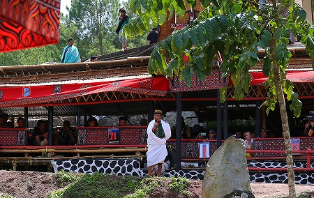
歌のような泣き声のような呪文のようなおじさんのワンマンショーは続く。
先ほどの葬式ダンスや棺桶モッシュに比べると若干お休みモードに入ったようだ。
ほら、メタルのライブとかでも何曲目かに急に歌い上げたりするじゃない。
そんで次に来るべきヘッドバンキング&モッシュ&ダイブ&殴り合いに備えて呼吸を整えたりするじゃない。
あれと一緒で参列者もややまったりモード。軽食タイムになっている。
その間に、周辺の諸々を見ておくことにする。
まずは位置関係のおさらい。
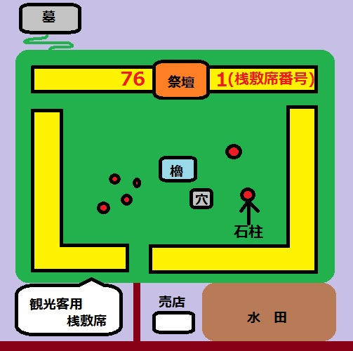
夫婦の棺が安置された祭壇部分のやや左側でおじさんのワンマンショーは行われている。
↑図でいうと76と書いてある辺りのも少し左側。
石柱とは
ボリの項で紹介した
葬式そのものを象徴するオブジェである。
一般的に各村ごとにここのような葬儀を行う専門の広場があり、そこに一族ごとに石柱が建てられる。
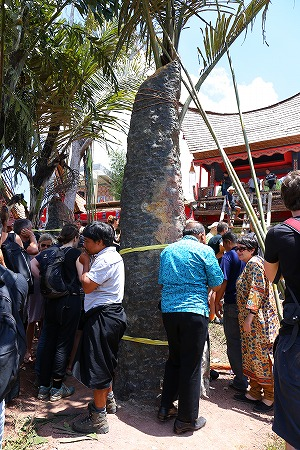
今回のメインの石柱はこちら。
もちろんこれも一族の経済状態によって大きかったり小さかったりする。
見たところ、この会場では一番大きい石柱のようだ。
祭壇近くには多くのパネルが並んでいる。
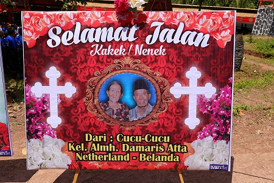
夫婦の写真と贐の言葉。
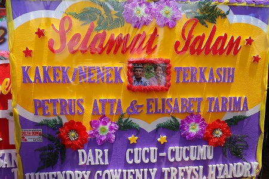
フォトショが世界中で色んな使われ方をしていることを実感しますなー。
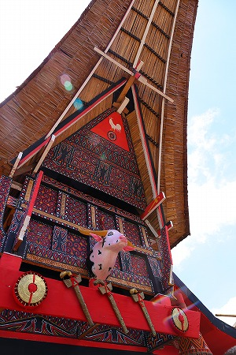
桟敷席も数日間の葬式のための仮設施設とはいえ手は抜かない。
普通の住居と同じようなクオリティのトンコナンハウスが建設されるのだ。
本当に自分たちが住む家と同じかそれ以上の仮設桟敷を作るその精神性は何なんだろう、ホント不思議だ。
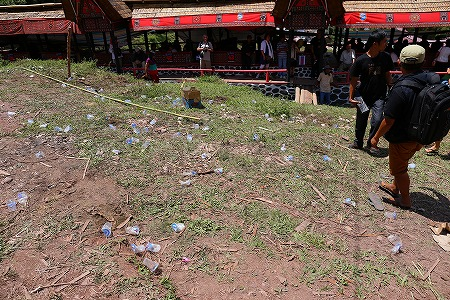
広場のあちこちには客が飲み捨てた水の容器が散乱していた。
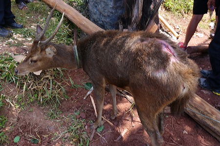
先ほどの石柱に鹿が繋がれていた。
水牛や豚が屠られるのは知っていたが、鹿も生贄にされるのだろう。
何故か背中の一部分だけ毛を剃り、刃物で切れ目が入れられていた。
この後、鹿はどこかに連れ去られていったようだが、どうなったかは最後まで判らなかった。
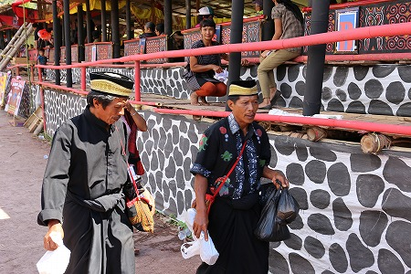
参列者の男たち。
黒いシャツに黒い巻きスカートのような民族衣装、ペチというインドネシア独特の帽子。
これは喪服である。
喪服を着ているのは参列者全体の半分以下なので、故人に比較的近い立場の人なのだろう。
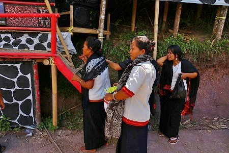
こちらは参拝客の女たち。
白いシャツに黒い巻きスカートに黒っぽいショール。
これも喪服だ。
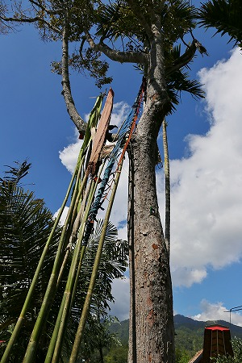
広場の中にある木に竹槍のようなものが掛けられていた。
先端は様々な意匠が凝らされている。
日本でいうところの野辺送りの際に使用される龍頭のようなものなのだろうか。
…判らない人は近くにいる100歳位の年寄りに聞いてださい。
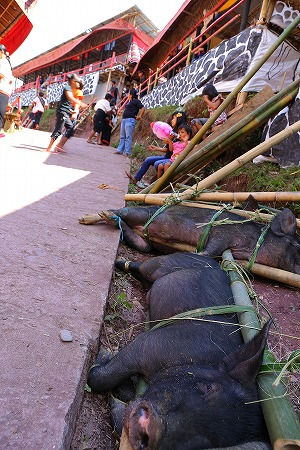
会場の片隅には豚が放置されていた。
この後屠られるんだろうなあ。
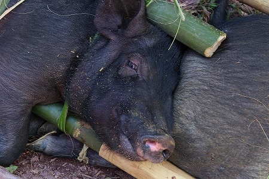
己の運命を知ってか知らずか、ピクリとも動かない。案外諦観しているのかもしれない。
そうこうしている内におじさんの祝詞タイムも終わり、会場全体が妙な熱気を帯びてきた。
客は桟敷から出てきて広場の中央に集まってきた。
それにつられて観光客もビデオやカメラをセットし始める。
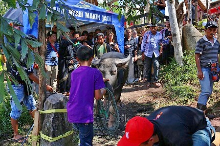
そこに水牛が連れてこられた。
にわかにどよめく参列客。
牛のグレードや大きさを評価しているのだろうか。
先日、牛市場を視察した、にわかトラジャ水牛評論家こと私の判定によれば白い部分が混ざっている水牛なので、
中の上、といった辺りだな。
石柱の前に一旦繋がれた水牛。
しかしすぐ綱は解除される。
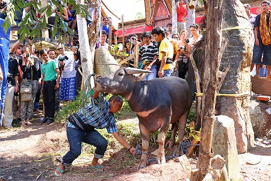
そこへおもむろに現れた青チェックシャツの男。
どうやら彼が牛を屠るようだ。
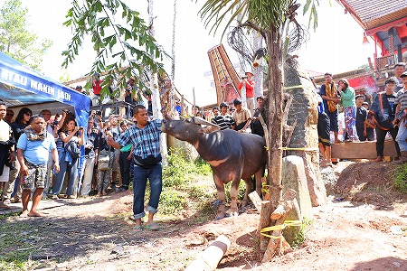
慣れた様子で牛をなだめつつ首筋を点検、恐らく専門の人なのだろう。
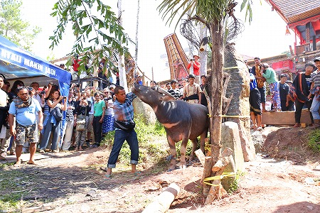
首筋をチェックすると間髪入れず手にした小刀を振り上げる。
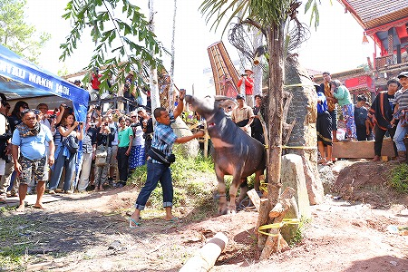
そして何の前触れもなく水牛の喉笛を
…しゅっ！
っと斬る。
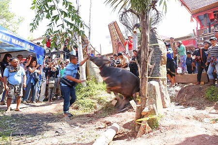
その瞬間、何があったのか良く判らなかった。
今首斬ったの？それとも軽く試し斬り？
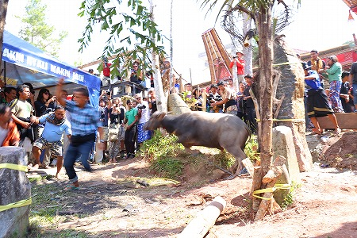
水牛の方にしても同様だったらしく、一瞬驚いて身を捩じらせたものの、しばらく様子が判らずキョトンとしていた。
その間に首切りの男は大成功とばかりに誇らしげに牛から離れていく。
死者のために生き物を屠る事の是非はここで論議しても何の意味もないが、
くわえ煙草で喉笛を掻っ切る姿はある意味衝撃的だった。
彼にしてみれば一服しながら行うほどカジュアルな行為なんだろうか。
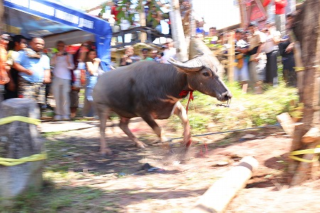
何が起こったのか判らない水牛だが、なんとなく様子がおかしいのだけは察知したようで、とりあえず走り出す。
喉笛からどうどうと鮮血を流し、それでも「あれ？何か変。喉元がヒューヒューしてるよ、ボク」といった感じの落ち着きっぷり。
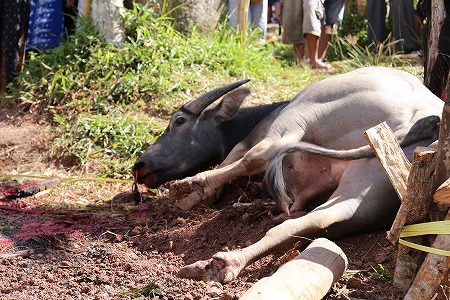
びっくりする位大量の血が喉からほとばしった後、まさに力がふにゃふにゃと抜けていくように水牛がへたりこんだ。
この時点でも水牛は「あれあれ？何かおかしいぞ」くらいにしか思ってない様子。
死が目の前に迫っている緊迫感など微塵も感じないのである。
どちらかというと市場で竹に縛られる豚の方がはるかに死に直面しているように思えた。
それだけ屠殺師のテクニックが見事だったんだろう。咥え煙草だったけどな。
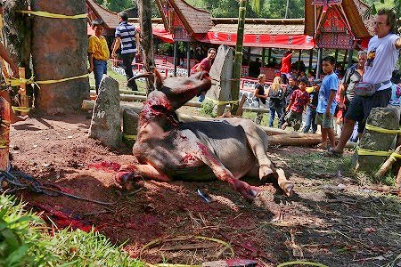
へたり込んでもなお、喉元からはバケツをひっくり返したかのような出血が続く。
そこで初めてこれはヤバい！と感じたのか、水牛が声にならぬ声と共に
ぶるん！と首を大きく振った。
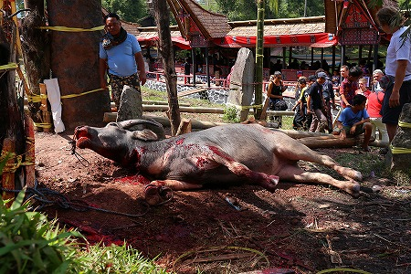
その姿勢のまま、水牛は絶命した。
喉笛を切られてから数十分間は経過したと思っていたのだが、後でデジカメのデータを見るとわずか2分足らずの出来事だった。
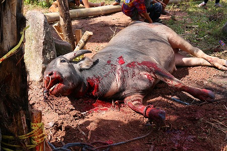
驚くほど大量の鮮血を首から流し、水牛は死んだ。
ちびっ子の頃、時代劇やヤクザ映画を見て「血ィ赤すぎるやんけぇワレェ！しばくどゴルァ！」とテレビに向かって毒づいていたものだが、実際に流れてた血はあのわざとらしい赤色そのものだった。
そして流れた血は見る見るうちに赤い大地に吸いとられてしまうのであった。
…産まれて初めて生贄というものを見た…
いや、ここまで大型の生物が死ぬ瞬間を見たのも(人間以外では）初めてかも知れない。
繰り返すが、生贄の是非をここで問うつもりは毛頭ないし、トラジャの社会がこうやって成立いることも理解してこの地に来たつもりだった。
それでも多分、生き物が殺されるのを目の前で見たら悲しくなるのだろうなあ、と漠然とした予感はあった。
ところがどうだ。
この
血がたぎるような興奮。
恐らくその場にいた全員が同じ想いだったに違いない。
観光客としてその場に居合わせた一見リベラルな面をしたヨーロピアンも含めてだ。
興奮度を徐々に高めるダンスや棺のモッシュ、そしてその後、一瞬にして訪れるカタルシス。
式次第自体が知らず知らずのうちに人々を興奮させるように仕組まれていたのだ。
人はある種の状態に閉じ込められ、集団幻想に陥ったらいとも簡単に感情をコントロールされるのだ、ということを身をもって知った。
もちろん今、冷静になって考えてみればその興奮状態はその場の雰囲気に呑まれたからだ、ということは理解できる。
ただし
例えば自分がもし戦争に行って、この葬儀のような集団ヒステリーの真っただ中に身を置いたら狂ったように人を殺すのだろうか。
そう思ったら恐ろしくて仕方がなかった。
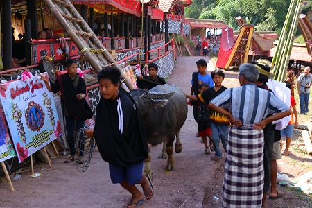
絶命した水牛同様、自分がどうなっているのか良く判らない状態で唖然としていると、もう一頭の水牛が運ばれてきた。
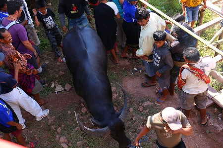
すわ、また生贄か！と思っていたらさらにもう一頭の水牛がやってきた。
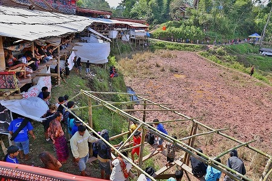
すると参列者たちは急に後ろを向き、桟敷を挟んで広場とは逆側の水田に向かって陣を取り始めた。
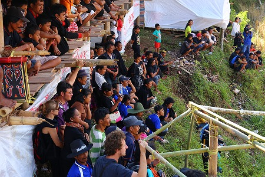
しかも皆超盛り上がっている。
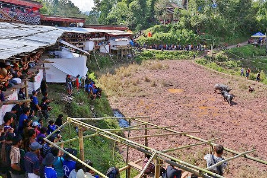
屠殺ではなく、
闘牛だった。
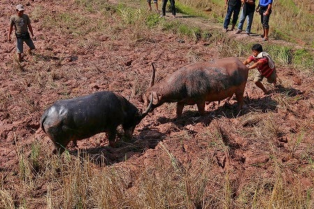
収穫後の水田で泥まみれになりながら水牛同士が角を突き合わせている。
そのガツッ！ガツッ！という音に参列者は嬌声をあげ、興奮している。
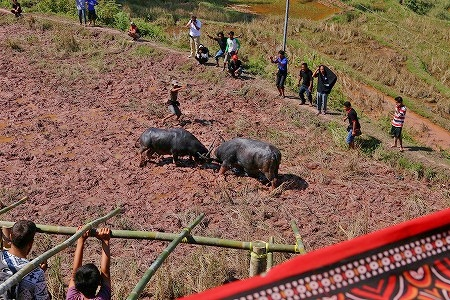
一試合終わるとまた次の牛がやってくる。
こうして何度も闘牛が行われ、参列者は先ほどの牛の生贄のことなどすっかり忘れたかのように目の前の娯楽にのめり込んでいるのだった。
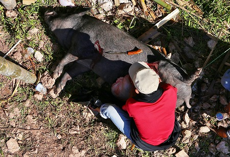
水牛の興奮の中、ふと桟敷の陰を見ると先ほどの豚が内臓だけ抜かれて丸焼きにされていた。
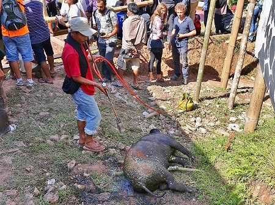
丸焼きといっても鉄棒を刺して焚火でぐるぐる…といった情緒的な雰囲気ではなく、いきなり
ガスバーナーで直接ベイク。
皮とかそのままでいいのか。とは思ったが、そういえば食堂で食った豚とか牛のカレーも皮そのままだったなー、と思い出した。
まして牛とか毛抜きすらしてなかったし…。
ワイルドすぎる野焼きで豚の丸焼きを作るのであった。
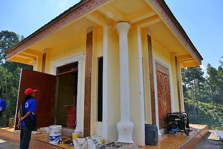
最後に会場のやや上にある墓所を見させてもらった。
数日後に迫る納骨に向けて墓の内部を掃除している。
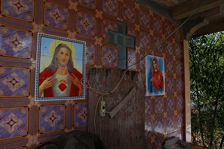
入り口にはキリストとマリアの肖像画が。
あくまでも表面上はキリスト教を信仰しているが、葬式や墓といった基本的なベースは祖霊崇拝であるアルクトドロという民族宗教の影響が色濃く残っている。
まあ、表向きの宗教とルーツの宗教を使い分けるのはトラジャだけじゃないですからね。
トラジャの民族的アイデンティティを完膚なきまでに見せつけられた一日だった。
次へGO！